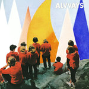
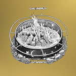
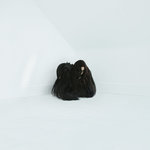
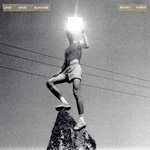
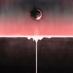
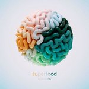
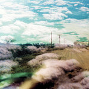

Quick Takes (September 2017)
Welcome to our latest edition of Quick Takes, where we tackle a number of albums that we weren't able to cover during the previous month!
I can officially confirm that the staff is already thinking about which albums to nominate for our annual year-end list, but in the meantime, we've still got a lot of ground to cover in the coming months. This month was a particularly more exciting one for myself, as I was pleasantly surprised with Mount Kimbie's latest reinvention and Mogwai's dependable post-rock. Carl enjoyed Alvvays' charming second effort and Ibeyi's uniquely defiant return, all while completely destroying Death from Above's tepid "Outrage!." He's really fond of their past work, so it must've hurt to be so harsh. And our friend Sean makes a second appearance on Quick Takes, which makes him our first official honorary guest.
What were your favorite albums during the month of September? Anything we didn't get to review on our site that we should've? You can always reach us on facebook, or on our official twitter page. - Juan
..
Alvvays
Antisocialites
(Transgressive)
Alvvays’ self-titled debut record arrived in 2014 shrouded in sun-drenched, distorted jangly pop, laced with a charming wit and a conveyor belt full of affectionate, stirring melodies. As far as debut LPs go, Alvvays was a triumph, exploring the lineaments of the quarter-life crisis and the ruminations of figuring it all out in an extremely palatable manner. Antisocialites works from the same blueprint sonically, but the themes are less extensive and instead muse, for the most part, over relationship struggles. Opening track In Undertow glistens and sparkles through a shoegazing purr, and gives the impression of a new dawn following a particularly difficult dusk. Molly Rankin’s vocals throughout the record compliment the soundscapes perfectly, fanning disappointment with hope whilst exercising a great deal of control - and an admirable lack of bias - over her ponderings. [7/10] Carl Purvis
Chad VanGaalen
Light Information
(Sub Pop)
Chad VanGaalen is one of those musicians who’s fortunate enough to have developed his own sound. The Calgary singer-songwriter’s slightly askew melodies have always been peculiarly inviting, held together with a brittle lacquer that shows signs of instability and apprehension. His sixth release, Light Information, further refines his bastardized folk arrangements but with a darker, richer finish. But there’s also a punk-ish undercurrent to most of the album that shows him at his loosest and most unhinged, where his odd lyrical forays sometimes play second fiddle to his inscrutable compositions. It does cover a wider sonic landscape while retaining that home-brewed approach, like in the cosmic void of Prep Piano and 770, though there’s no denying that he plays to his strengths when he writes readily tuneful, yet carefully punctuated, songs like Host Body and Pine and Clover. There’s a deferential tone to Light Information that suggests he’s never really going to change his signature shtick, and even if we always know what to expect, it always feels like a warm return home from an always generous friend. [7/10] Juan Edgardo Rodríguez
Chelsea Wolfe
Hiss Spun
(Sargent House)
Chelsea Wolfe’s fifth studio album creates an alarmingly intense landscape, using an oppressive wall of malignant guitars to cauterize her own personal wounds. It’s a space that throbs with a massive sense of foreboding, with Wolfe’s strabilious vocals rarely leaving the shadows or fighting the devastating weight of the guitars that immerse them. Wolfe allows sweetness and delicateness to take their own unique forms throughout the record also, adapting to the mass movement of doom and sludge to present themselves in a manner that coexists with the trepidation it resides in without seeming alien. It’s a beautifully fragile balance that is created, and a means of dragging the listener down into the frightening landscape. Hiss Spun is the first record from Chelsea Wolfe that commits entirely to the more catastrophic elements of her repertoire, and the results are equal parts stunning and terrifying. [7/10] Carl Purvis
Death From Above
Outrage! Is Now
(Last Gang)
Death From Above have reverted to their original name (the band dropped the 1979 earlier this year) and continued their resurrection that saw a whole decade elapse between their furiously brilliant debut LP and 2014 follow up The Physical World. That record picked up where its predecessor left off, using volume, speed and efficiency as its three main ingredients, boasting remnants of the huge dance-punk grooves that made them a cult phenomenon upon their arrival. Unfortunately, Outrage! Is Now has very little to write home about. Where The Physical World merely got rid of some of the rougher edges, Outrage! Is Now is unequivocally uninspired, shelving almost all of the rawness that put the Toronto doublet on the map thirteen years ago. It’s lyrically apathetic, and Jesse F. Keeler’s basslines have lost all of their punishing nature. In fact, the only thing I look back on with any fondness from its whole runtime is the riff from Caught Up. And that’s about it. [3/10] Carl Purvis
Ibeyi
Ash
(XL)
22-year-old French-Cuban twins Lisa-Kainde and Naomi Diaz return with their second LP as Ibeyi, wearing defiance and resilience on the forefront of their sleeves. Their songs don’t fit into a given genre, instead weaving electro-soul, hip-hop and jazz inclinations around beats and rhythms that boast West African Yoruba influences (the word ‘ibeyi’ also translates as ‘twins’ in the Yoruba language). Their willingness to embrace worldly influences - and infuse their own urbanity - into their arrangements is crucial with regards to enabling the spirited reveries to accommodate the twins’ extrasensory wordplay, bringing a stability to the arbitrary grooves. The album’s standout track, Deathless, is a rallying cry, recounting Lisa-Kainde’s wrongful arrest as a 16-year-old and the racial leanings of the incident, channeling the recent indispensable work of the likes of Dev Hynes and Solange Knowles in recognising hate and retaliating with integrity and rectitude. [7/10] Carl Purvis
Moses Sumney
Aromanticism
(Jagjaguwar)
It took Moses Sumney a good half decade to reveal his debut record, Aromanticism. The LA singer-songwriter’s evocative crooning has finally found a home within the album’s shadowy ambiance, where nocturnal-sounding chamber arrangements creep up at each and every corner. Sumney is caught in a moment of relaxed thoughtfulness throughout its 34 minutes, reflecting on an infatuation that is dominating his emotions. He’s finally forging an identity that suits him, giving a high importance to his abstract leanings to bring to bear his esoteric pop sensibility. Aromanticism is downright beautiful but is also too enamored with its sensual aura, which sometimes exposes his uneven vocal acrobatics. Still, it’s a revealing first taste from an artist who’s been hiding his innate talent for far too long. [7/10] Juan Edgardo Rodríguez
Mount Kimbie
Love What Survives
(Warp)
What’s most surprising about Love What Survives is how it’s completely against the idea of electronic music as an isolated vehicle for creation. The British duo of Dominic Maker and Kai Campos had strapped into their consoles in the past, incorporating an inventive potpourri of sonic contours that rendered cerebral contemplation, but there was always the faint possibility that they’d branch out into a format that encompasses far more than surface-level pleasantry. Mount Kimbie lock themselves into a conceptual frame that’s heavily inspired by German krautrock, incorporating shuffling drum patterns and whizzing synth textures that converge into actual songs. But there’s so much more to Love What Survives than motorik grooves and eddying drones. A notable cast of musicians, ranging from James Blake and King Krule to Micachu, impart their own idiosyncrasies, coming together to adopt a more avant-garde variant. But never does it hide the duo’s own merits, as they embrace a more vibrant form of beat-driven electronica that also functions in a rock context with collaboration at its heart. [8/10 - Believe the Hype] Juan Edgardo Rodríguez
Mogwai
Every Country’s Sun
(Rock Action)
It’s easy to write off Mogwai. The Glasgow institution has been a dependable post-rock incubator for two decades now, outlining backdrops of rising tension in an orderly manner with varying results. The fatigue started to set in after a quick succession of firm but uneventful soundtracks, and even more so on 2014’s Rave Tapes, which borrowed from their side projects rather than revitalizing their brand. There’s nothing worse than complimenting a band for minimizing their risks, and some of Every Country’s Sun does allude to a lot of Mogwai’s past, but it’s also the first time in quite some time that they’re letting out their monumental crescendos as if they’re open to making a fresh start. And they do explore new ways to enliven their well-trained techniques, whether it’s building their sustained uproar with gleaming melancholy (Brain Sweeties), revisiting their glacial slow-core stompers (20 Size), or subtly flavoring some of their score work into their climactic outros (Don't Believe the Fife). A lot of this terminology may sound familiar to the Mogwai devoted, but Every Country’s Sun does signal a change in attitude and confidence, and there’s no more convincing argument than that. [8/10] Juan Edgardo Rodríguez
Superfood
Bambino
(Dirty Hit)
Birmingham band Superfood have downsized to a two-piece since the release of 2014’s Britpop-shaded debut Don’t Say That. Couple that with the fact they’ve nabbed themselves a new label and put the fuzzier guitars on the shelf, this is – effectively – a second debut. It’s all for the better, too. Where the fuzzed guitars were three years ago, a pristine, exotically intricate clean-cut sound has replaced them. Opening track Where’s The Bass Amp? immediately announces a new direction with a giddy, playful groove and the sort of samples that Fatboy Slim and Basement Jaxx wouldn’t be aversed to using. Bambino is a record that is kaleidoscopically colourful, staying in charge of a viciously artistic wall chart of sounds and turning it into something impressively cohesive. In the groovefest that is Need a Little Spider and the deliciously sleek Double Dutch, there are some downright bangers on here for good measure. [7/10] Carl Purvis
Wand
Plum
(Drag City)
Next to the muddier, more noise-laden Golem and some of the synthesized and space-borne treatments used for their follow-up, 1000 Days, Wand’s fourth album, Plum, is a more grounded and accessible work. With stylistic nods to The Zombies and Status Quo, (the latter more than acknowledged with the melodic choices made for the track, Bee Karma), Wand’s latest psychedelic-leaning rock endeavor trips less than it muses as if composed following a chemically-fueled episode. With a vocal inflection almost comparable to George Harrison, vocalist Cory Hanson exudes a delicate charm throughout the album, his voice never straining or attempting to match any of the band’s occasional movement toward instrumental intensity, like with the entertainingly off-kilter White Cat or relative Television’ish eccentricity of Blue Cloud. While Wand’s leap forward didn’t live up to some of the expectations I’d had via 1000 Days, the light and engaging Charles De Gaulle and nicely-arranged harmonizing in Driving wouldn’t exist if not for the band’s efforts to do so with Plum. [7/10] Sean Caldwell
The World is a Beautiful Place and I Am No Longer Afraid to Die
Always Foreign
(Epitaph)
The World is a Beautiful place and I Am No Longer Afraid to Die show their own feelings clearly and openly. The Connecticut four-piece always keep the tension steady and focused. That is, until they finally erupt with quiet intensity, underpinned by twinkling power-chords that resounded with airtight efficiency on their last effort, Harmlessness. Always Foreign occasionally sounds like a band who is retracing their steps while looking forward, expanding their instrumental palette even if their ardent concepts remain. A large portion of Always Foreign focuses on building terse melodic post-rock suites (Faker), though their words are necessary and valued, and they emote them with a heartfelt directness that recalls their formative beginnings (Dillon and Her Son, Gram). This balancing act of moods can sometimes lend Always Foreign an air of indecision, though if the intent was to take it as majestic as it can be, then they remove any trace of subtlety on the album’s rousing power ballad as if applying the handkerchief-in-hand progressive elements of Queensryche (Infinite Steve). But The World is a Beautiful Place… will always support their layered sprawl with an affirmative glance, even when the strong chassis that protects them seems to be falling apart. [7/10] Juan Edgardo Rodríguez
24 October, 2017 - 18:13 — No Ripcord Staff